04 · 관리 페이지
관리 페이지
관리 페이지는 내 컴퓨터(127.0.0.1)에서만 여는 웹 화면이다. 처리할 일 · 진행 · 문서 · 승인 · 검증 · 스킬 · 운영 · 사용량을 한곳에서 보고, 사람만 할 수 있는 일(승인 · 질문 답 · 리뷰 판단 · 세션 요청)을 여기서 한다. 화면에만 있는 기능은 없다 — 모든 일은 CLI 로도 된다.
모두 관리 페이지 개발 도구의 예시 리포(acme-shop, 이슈 4 · Intent 1 · 검증 · 리뷰 · 운영 기록을 채운 일회용 폴더)를 실제 knots-sync dashboard 로 열어 1440px 폭으로 찍었다. 이 안내서를 쓴 곳이 에이전트 세션이라 서버는 읽기 전용으로 떴다 — 그래서 화면 곳곳의 승인 · 저장 단추가 꺼져 있고 주황 "읽기 전용" 안내가 보인다. 사람이 자기 터미널에서 연 서버에서는 같은 단추가 켜진다. 이름 · 메일(jiyoon@acme.dev) · 숫자는 모두 예시다.
여는 법
$ knots-sync dashboard # 이 리포. 주소는 표준 출력, 승인 PIN 은 표준 오류
$ knots-sync dashboard --open # 브라우저도 연다
$ knots-sync dashboard --port 4791 # 포트 고정(기본은 빈 포트)
$ knots-sync dashboard --all # 등록부(~/.config/knots-sync/projects.json)의 모든 프로젝트
$ knots-sync dashboard --root ~/work # 이 폴더 아래 리포들
$ knots-sync dashboard --read-only # 보기만(승인 · 저장 끔)
$ knots-sync dashboard --export out/ # 정적 HTML 내보내기(스크립트 · 단추 없음)사람 터미널에서 열면 이렇게 나온다(주소 · PIN 은 실행마다 다르다).
http://127.0.0.1:<포트>/#t=<토큰>
승인 PIN: <10자> — 승인 · 질문 답 · 리뷰 판단 때 넣는다. 이 터미널에만 보인다(파일에 쓰지 않는다)에이전트 세션 안에서 열면 PIN 대신 이 줄이 나온다(이 안내서를 쓸 때의 실제 출력).
http://127.0.0.1:4791/#t=…
읽기 전용(CLAUDECODE=1) — 저장 · 승인 · 답 · 리뷰 판단 · 작업 요청을 끈다- 서버는 127.0.0.1 에만 붙는다. LAN 으로 여는 옵션은 없다.
Host가 다르면 421, 토큰이 없으면 401 이다. - 토큰은 주소의
#t=뒤에 있고 화면이 브라우저 저장소로 옮긴다. 단일 리포 모드에서는.agents/state/dashboard.token(권한 0600)에도 쓰고 끝날 때 지운다. 같은 리포에 서버가 이미 있으면 새로 열지 않고 그 주소를 낸다. - 끝내려면 터미널에서 Ctrl+C. "관리 페이지를 닫았다(토큰 · dashboard.json 을 지웠다)"가 나온다.
- 서버는 커밋 · push · 브랜치 전환 · worktree 생성을 하지 않는다. 모델도 부르지 않는다.
틀 — 왼쪽 메뉴와 머리줄
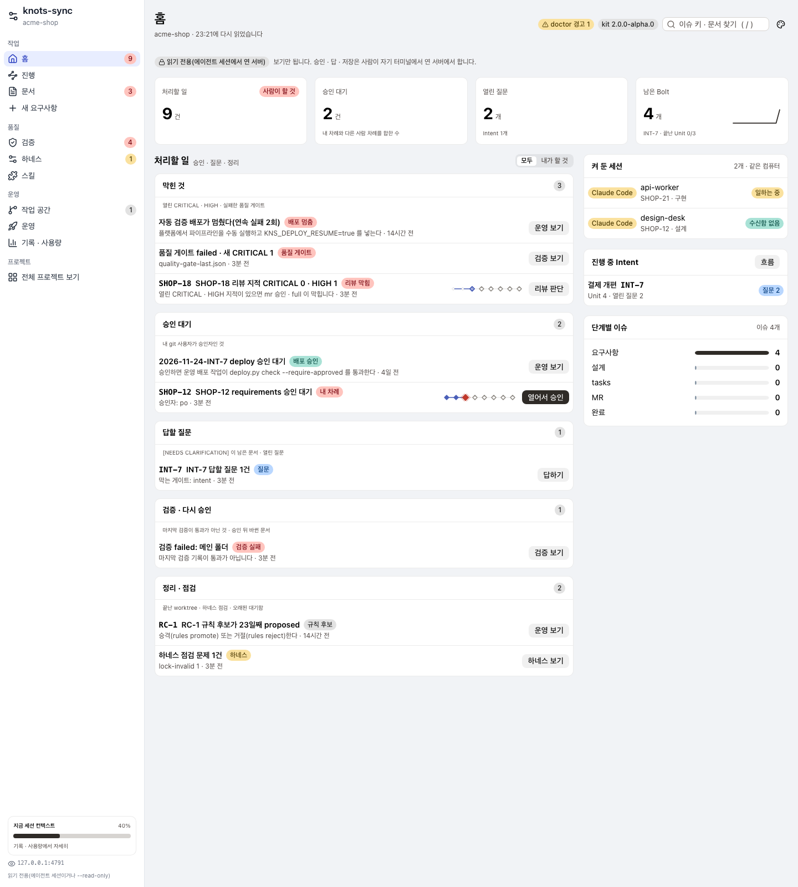
- 왼쪽 메뉴 — 작업 · 품질 · 운영 · 프로젝트 네 묶음. 오른쪽 알약은 개수다: 빨강 = 사람이 정할 것(처리할 일 · 승인), 노랑 = 경고, 회색 = 정리할 것.
- 머리줄 —
doctor 경고 N(누르면 하네스 화면) · 킷 판 칩 · 찾기(/ 로 초점, 이슈 키나 문서 경로) · 색 설정(팔레트 아이콘, 아래). - 읽기 전용 띠 — 에이전트 세션에서 연 서버나
--read-only면 "읽기 전용(에이전트 세션에서 연 서버)"가 보인다. - 숫자 카드 — 처리할 일 · 승인 대기(내 차례와 다른 사람 차례를 합한 수) · 열린 질문 · 남은 Bolt(진행 중 Intent 의 남은 일 그래프).
- 처리할 일 — 막힌 것 · 승인 대기 · 답할 질문 · 검증 · 다시 승인 · 정리 · 점검 순으로 최대 50건. "모두 / 내가 할 것" 으로 거른다. 줄마다 "열어서 승인" · "답하기" · "검증 보기" · "운영 보기" 같은 단추가 그 화면으로 보낸다.
- 켜 둔 세션 — 하네스 배지 · 세션 이름 · 이슈 · 역할 · 상태(일하는 중 · 쉬는 중 · 수신함 없음).
- 바닥 카드 — 지금 세션의 컨텍스트 사용률(기록 · 사용량을 켰을 때)과 서버 주소 · 연결 상태.
진행 — 보드
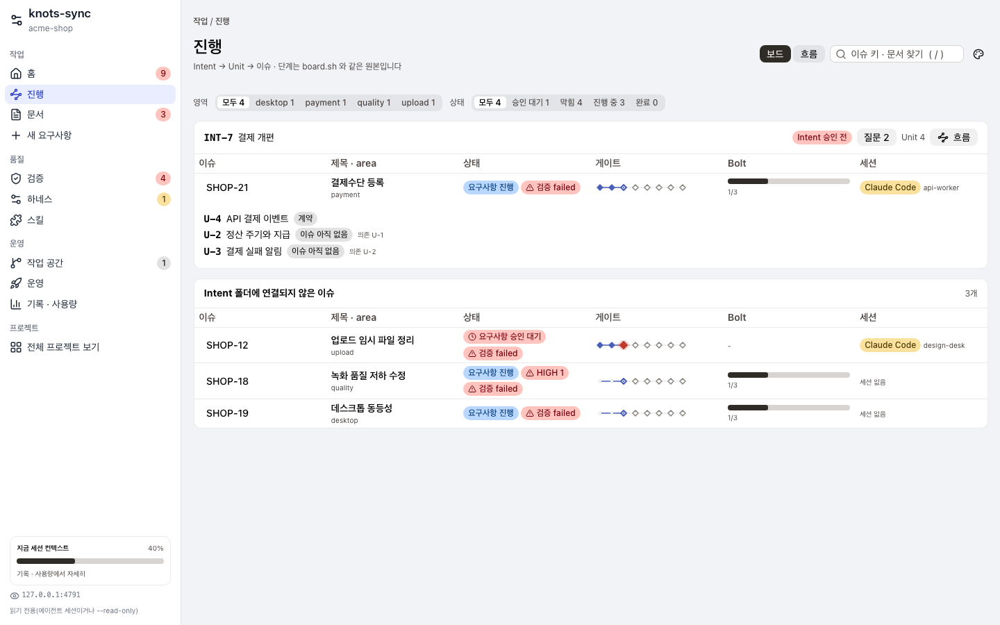
scripts/board.sh 와 같은 원본을 읽는다.- 보드 / 흐름 전환 단추(오른쪽 위). 흐름은 아래.
- 영역 · 상태 거름 — 이슈 머리의
area와 판정된 상태로 거른다. 주소에 남지 않는 화면 안 거름이다. - Intent 묶음 머리 — Intent 승인 상태 칩, "질문 N", Unit 수, "흐름" 단추.
- 게이트 레일 — Intent · 기획물 · 요구사항 · 설계 · tasks · MR · 완료 · 배포. 속 찬 마름모 = 지난 단계, 속 빈 굵은 테두리 = 진행 중, 빨강 = 사람 승인 대기, 옅은 = 아직. 색 말고 모양으로도 뜻이 읽힌다.
- Bolt 막대 — tasks 의 Phase 완료 수. tasks 가 없는 Unit 은 스토리 수로 센 추정값이다.
- 이슈 단추(키) — 누르면 오른쪽에서 이슈 서랍이 열린다.
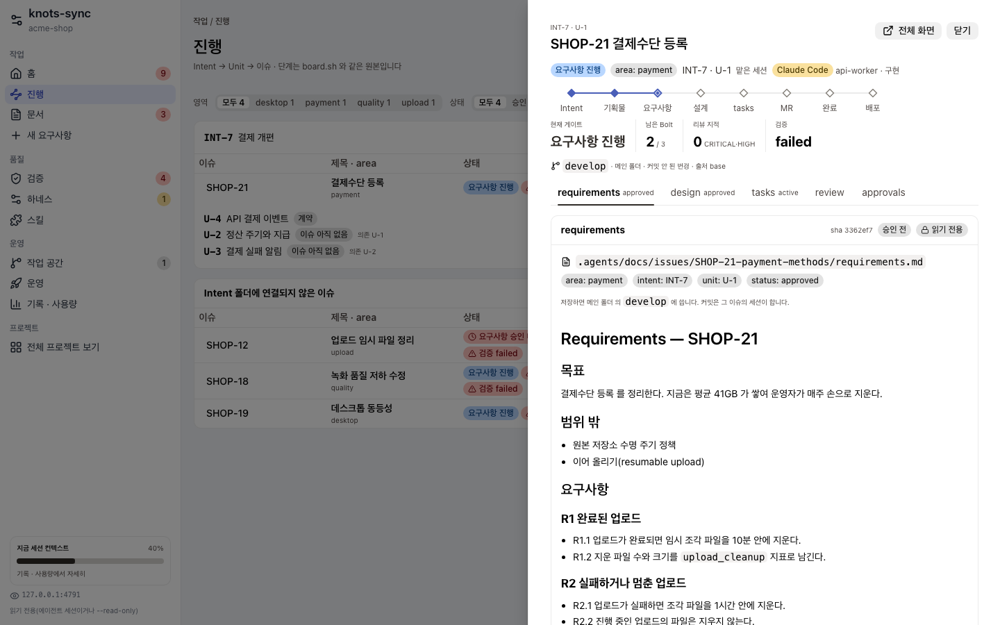
/issues/<키> 로 간다. Esc 로 닫는다.진행 — 흐름
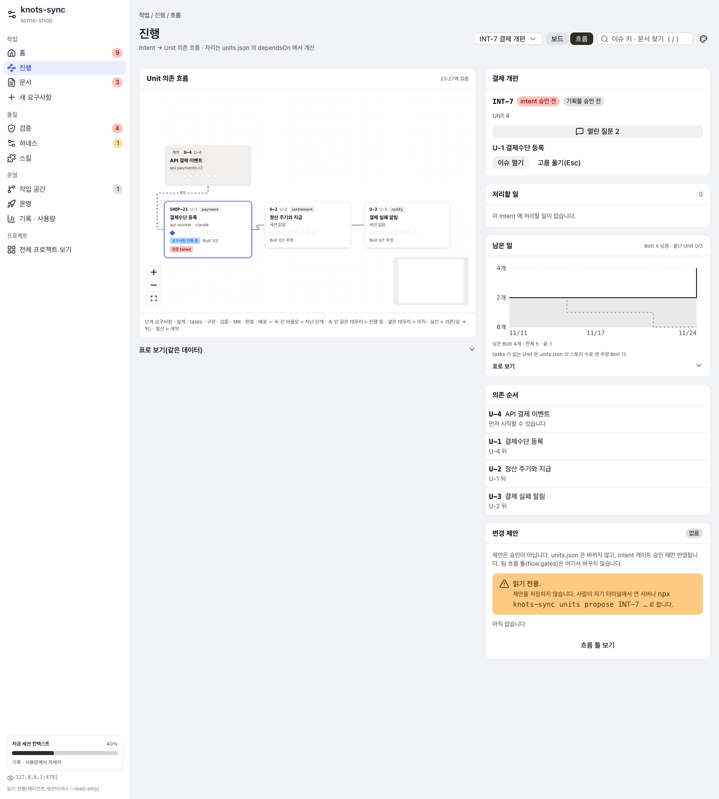
units.json 의 dependsOn 에서 계산한다. U-1 노드를 고른 상태(주소에 sel=U-1).- Intent 고르기(머리줄 드롭다운) — 진행 중 Intent 가 여럿이면 바꾼다.
- 캔버스 — 노드를 누르거나 Tab 으로 초점을 옮겨 Enter 로 고른다. Esc 로 고름을 푼다. 실선 = 의존(앞 → 뒤), 점선 = 계약. 노드 안 마름모 줄은 게이트 레일이다.
- 표로 보기(같은 데이터) — 캔버스를 쓰기 어려울 때 같은 내용을 표로.
- 남은 일 — 남은 Bolt(실선)와 이상선(점선). "표로 보기"로 숫자를 본다.
- 변경 제안 — 의존 더하기 · 빼기 · 나누기 · 합치기 · 순서를 저장한다. 제안은 승인이 아니고
units.json을 바꾸지 않는다. intent 승인 때 반영된다. 읽기 전용이면knots-sync units propose INT-7 …를 안내한다. - 흐름 틀 보기 — 지금 게이트 목록을 보여 주는 대화상자. 틀을 바꾸는 것은 터미널 명령이고 MR 로 올린다.
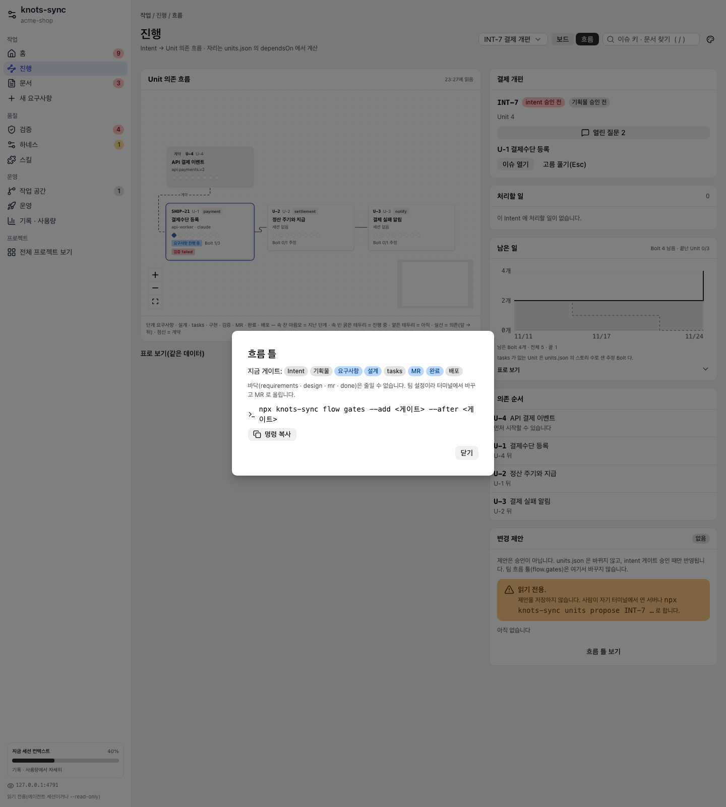
--after <게이트> 와 명령 복사, 닫기 단추." loading="lazy">문서
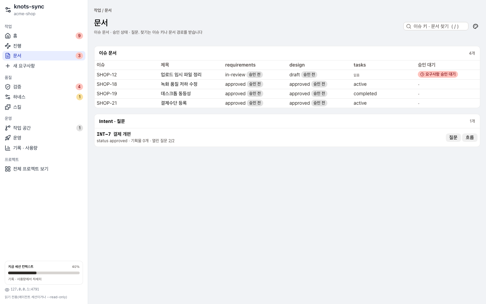
이슈 — 문서 · 승인 · 리뷰

- 탭 — requirements · design · tasks · review · approvals. 탭 옆 작은 글자는 문서 상태(
in-review·draft·없음). - 지표 띠 — 현재 게이트 · 남은 Bolt · 리뷰 지적(CRITICAL · HIGH) · 검증. 아래 줄은 쓰기가 일어날 체크아웃(이슈 브랜치가 체크아웃된 폴더, 없으면 메인 폴더)과 base.
- 문서 본문 — 렌더만 한다(원문 HTML 은 실행하지 않는다). 사람 서버에서는 "편집"으로 고치고 "저장" 또는 "저장하고 세션에 요청"을 누른다. 저장은 승인이 아니고,
status를approved로 바꾸는 저장은 422 로 거부된다. 다른 사람이 먼저 고쳤으면 409 와 지금 내용을 받는다. - 승인 패널 — 승인자(이 게이트의 approvers 와 지금 git 사용자), 검사 항목(
[NEEDS CLARIFICATION]0건 · 앞 게이트 조건), 승인 문구, "승인하고 기록" · "수정 요청", "수정 요청을 규칙 후보로 남깁니다". - 승인 PIN — "승인하고 기록"을 처음 누르면 PIN 대화상자가 뜬다(입력 칸에 초점, Enter 로 확인). 탭마다 한 번 묻는다. 5번 틀리면 서버가 끝날 때까지 PIN API 가 막힌다.
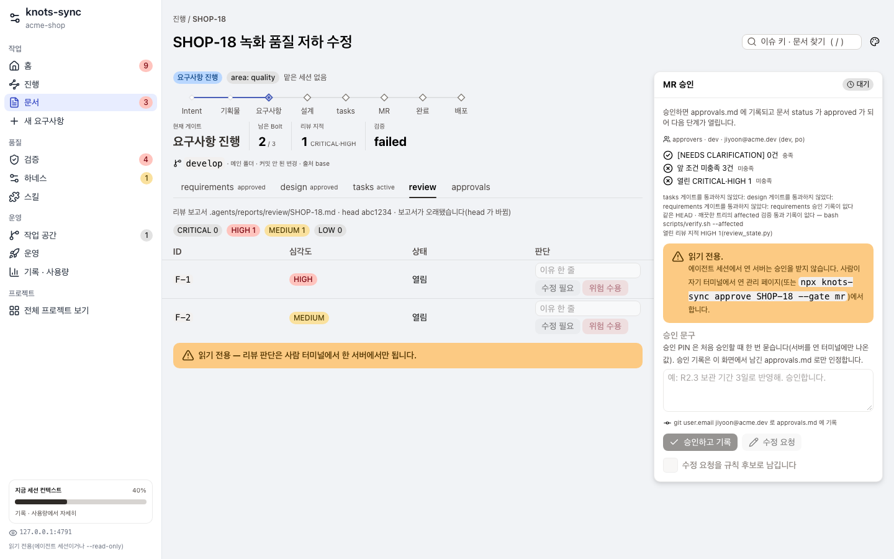
위험 수용은 approvals.md 에 review/F-n · risk-accepted 기록으로 남는다. CRITICAL · HIGH 가 열려 있으면 mr 승인과 full 검증이 막힌다. 터미널에서는 knots-sync review decide <키> F-1 --fix|--accept-risk --reason "…".
질문
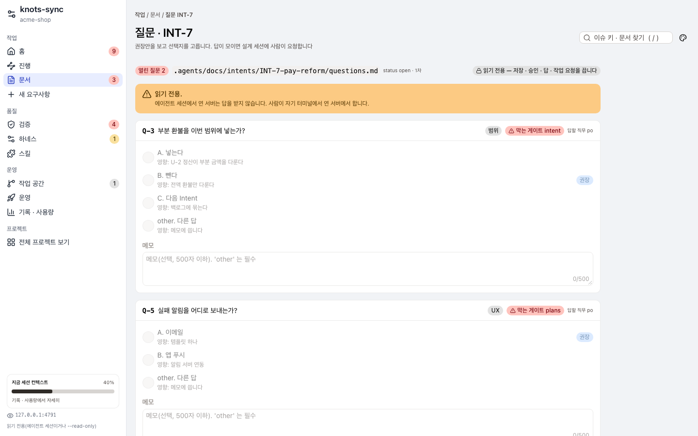
- 질문마다 종류(범위 · UX · 보안 …) · 막는 게이트 · 답할 직무가 칩으로 보인다.
- 선택지를 고르고 메모(500자 이하, "other" 면 필수)를 쓴 뒤 저장한다. PIN 을 묻는다.
- 모두 답하면 "설계 세션에 알리기"가 보인다. 누를 때만 세션에
answers-ready요청이 간다.
새 요구사항
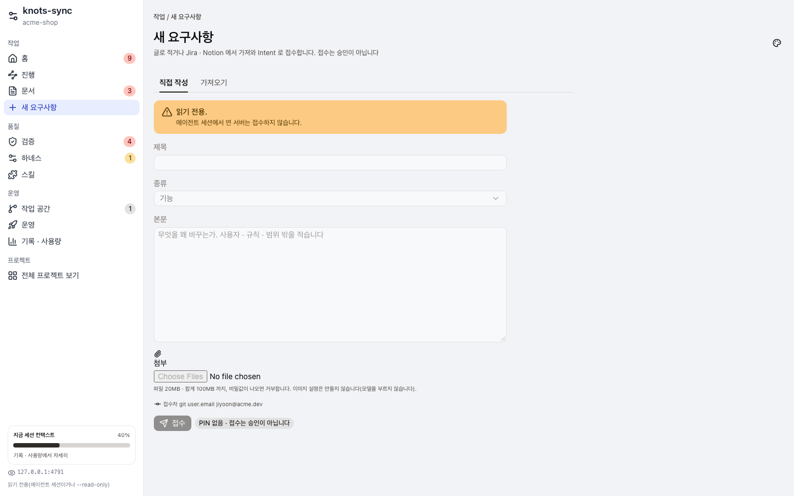
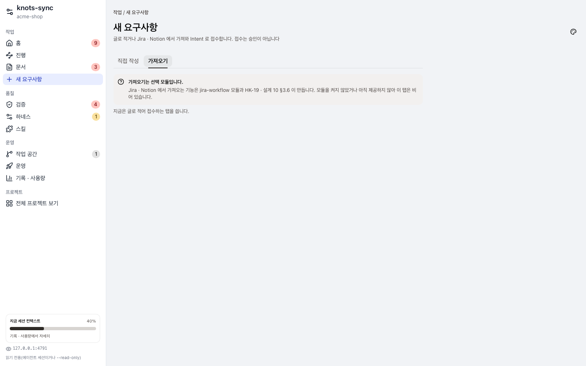
- 종류는 기능 · 변경 · 리팩터링 · 제품 · 버그. 접수자는 이 체크아웃의 git
user.email이다. - 접수는 승인이 아니라 PIN 이 없다(토큰만). 접수 뒤 화면이 "설계 세션에 요청할까"를 묻고, 사람이 고를 때만 간다.
- Jira · Notion 에서 가져오기는 지금 화면이 아니라 터미널 명령이다:
knots-sync intake --from jira:<키> --name …·--from notion:<URL> --name …(→ 모듈).
검증
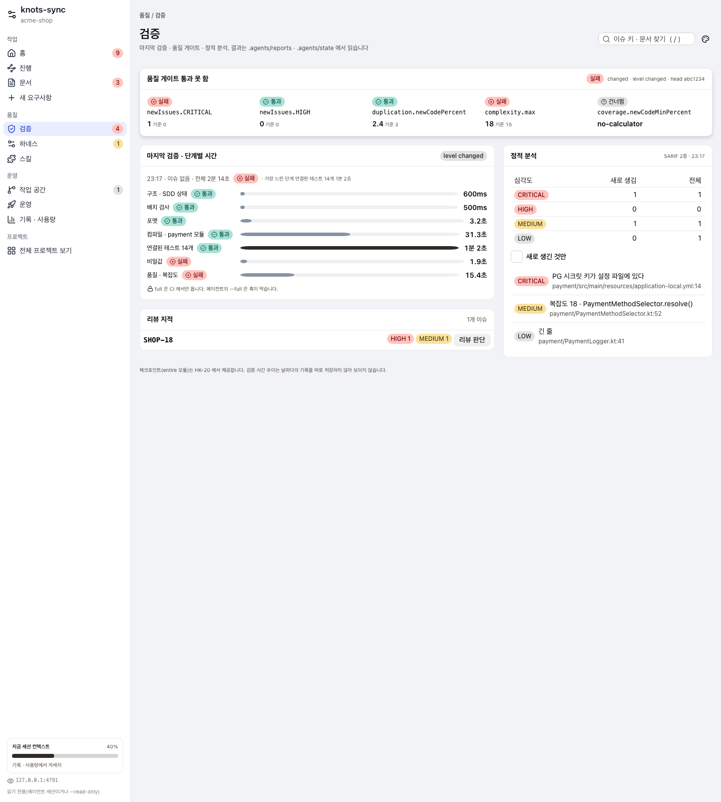
.agents/reports · .agents/state 에서 읽는다. 화면이 검증을 돌리지는 않는다.- 품질 게이트 — 새 CRITICAL · HIGH 수, 새 코드 중복률, 최대 복잡도, 새 코드 커버리지. 계산기가 없으면 "건너뜀"과 이유. 기준은
.agents/quality-gate.json. - 마지막 검증 · 단계별 시간 — 레벨(changed · affected)과 단계마다 통과 · 실패 · 시간. 가장 느린 단계를 위에 적는다.
- 정적 분석 — SARIF 에서 심각도별 "새로 생김 / 전체". "새로 생긴 것만"으로 거른다. 새 문제만 막는 게이트라 기존 문제는 기준선(
.agents/quality-baseline.json)에 있다. - 리뷰 지적 — 이슈별 열린 지적 수와 "리뷰 판단" 단추.
같은 데이터: knots-sync quality [--findings --new] · knots-sync status --verify.
하네스

- doctor —
knots-sync doctor와 같은 결과(예시 리포는 lock 없이 만든 fixture 라lock-invalid). - 흐름 · 승인 권한 — 게이트마다 구분(바닥 = 하한, 팀 설정)과 승인자. 비어 있으면 이 리포의 git 사용자 누구나. 내 git 이메일과 그룹.
- 버전 · 켠 것 — 킷 · CLI 판, 하네스, 모듈. "최신 판 조회"는 누를 때만 네트워크를 쓴다(
outdated). - 역할 배정 —
roles의 하네스. - 킷이 덧붙인 토큰 — 세션 시작 훅 출력 평균과 상한(2,560바이트). "자세히"는 기록 · 사용량 화면.
스킬
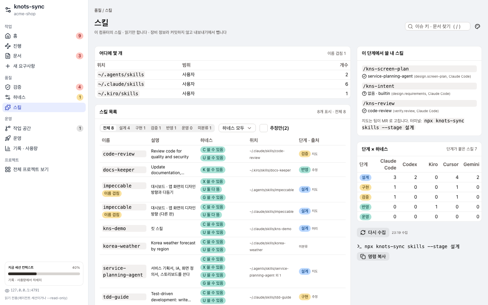
- 어디에 몇 개 — 사용자 폴더(
~/.claude/skills·~/.agents/skills·~/.kiro/skills…)와 리포의 스킬 수, 이름 겹침. - 스킬 목록 — 단계(설계 · 구현 · 검증 · 반영 · 운영)와 출처: 지도(
.agents/skill-map.json), 머리(스킬 머리의kns-stages), 추정(설명에서 추정). 하네스마다 쓸 수 있는지(C · X · U · K · G 머리글자). - 이 단계에서 쓸 내 스킬 — 킷 명령의 칸(slot)에 걸린 내 스킬. 없으면 킷 템플릿(builtin)으로 간다. 지도는 팀이 MR 로 고친다.
같은 데이터: knots-sync skills --stage 설계(실제 출력은 CLI 참고).
작업 공간
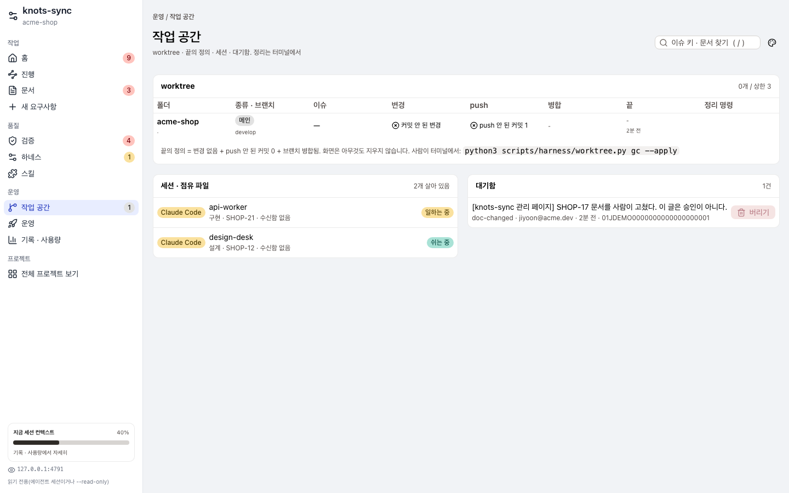
- worktree — 종류 · 브랜치 · 이슈 · 변경 · push · 병합 · 끝 여부. 끝의 정의: 변경 없음 + push 안 된 커밋 0 + 브랜치 병합됨. 리포당 상한 3.
- 세션 · 점유 파일 — 세션 시작 훅이
.agents/state/sessions/에 등록한 세션. - 대기함 — 세션에 닿지 못해 저장한 요청. "버리기"(사람 서버) 또는
knots-sync dispatch drop <id>.
운영

status --ops --json 은 이 화면과 같은 데이터다.각 칸의 뜻과 명령은 배포 · 운영 · 지표에서 설명한다. "요구사항으로" 단추는 운영 기록의 후보를 새 요구사항 화면으로 넘긴다(intake --from ops:…#NX-n 과 같다).
기록 · 사용량
![기록 · 사용량 화면의 사용량 탭. 기간 오늘 · 7일 · 30일, 하네스 모두. 안내: 읽기만 합니다, 이 컴퓨터에서만 보입니다. 읽는 곳 ~/.claude/projects 파일 1 세션 2, ~/.codex/sessions 파일 0, Kiro 자료 없음. 복사본을 남기지 않고 내보내기 · 커밋 · 세션 요청에 넣지 않습니다. 켜는 곳 ~/.config/knots-sync/config.json 의 history on. 숫자 카드 토큰 합계 7.1M, 요청 84회, 캐시 읽기 평균 88%, 추정 비용 -(usage.pricing 이 있을 때만). 하루 토큰 · 역할별 막대 그래프, 이슈별 토큰(SHOP-21 6.1M, SHOP-12 957K), 캐시 읽기 비율 선 그래프. 오른쪽 지금 세션(Claude Code implement, 40% 컨텍스트 80K/200K, 모델, 이슈 SHOP-21), 킷이 덧붙인 토큰(세션 시작 평균 969 / 2,560바이트 상한 안, 훅별 횟수 · 평균 · 최대), 하루 활동 점 격자.](assets/screens/usage.png)
~/.config/knots-sync/config.json 에 "history": "on" 을 사람이 넣어야 대화 기록을 읽는다. 꺼져 있으면 "킷이 덧붙인 토큰"만 보인다.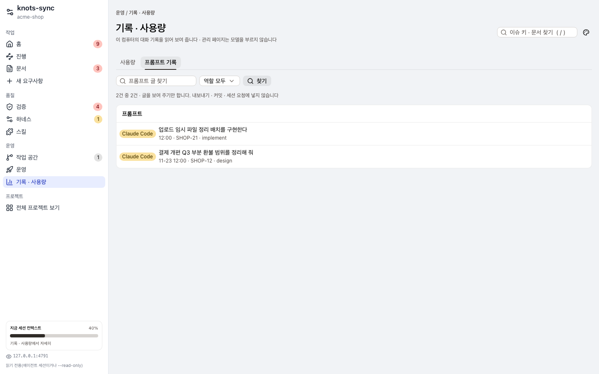
사용량은 하네스가 이미 남긴 기록 파일을 읽어 셀 뿐이다. 관리 페이지 · 저장 · 승인 · 답은 세션에 아무것도 덧붙이지 않는다. "킷이 덧붙인 토큰"은 킷 훅이 세션 시작 때 낸 바이트를 .agents/state/hook-output.jsonl 에서 센 값이다.
전체 프로젝트
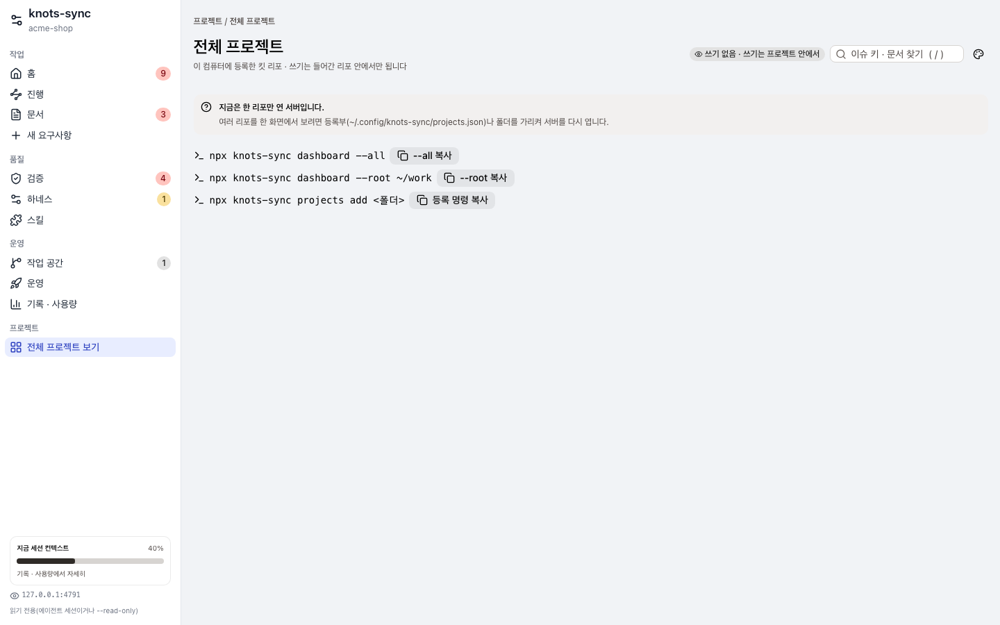
, 각각 복사 단추." loading="lazy">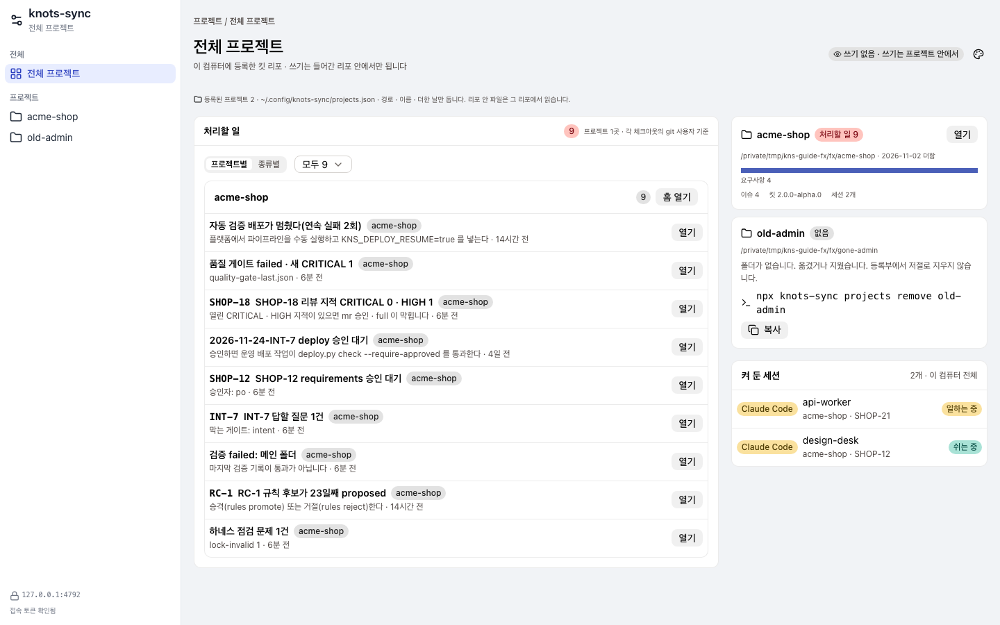
--all 모드(S00). 아무 파일도 쓰지 않는다. 쓰기는 "열기"로 들어간 리포 안에서만.등록부는 knots-sync projects list | add <폴더> | remove <이름|경로> 로 다룬다. 폴더가 사라진 프로젝트는 "없음"으로 남고 저절로 지워지지 않는다. 여러 프로젝트 모드는 토큰 파일을 쓰지 않고 토큰은 출력한 주소에만 있다.
색 설정
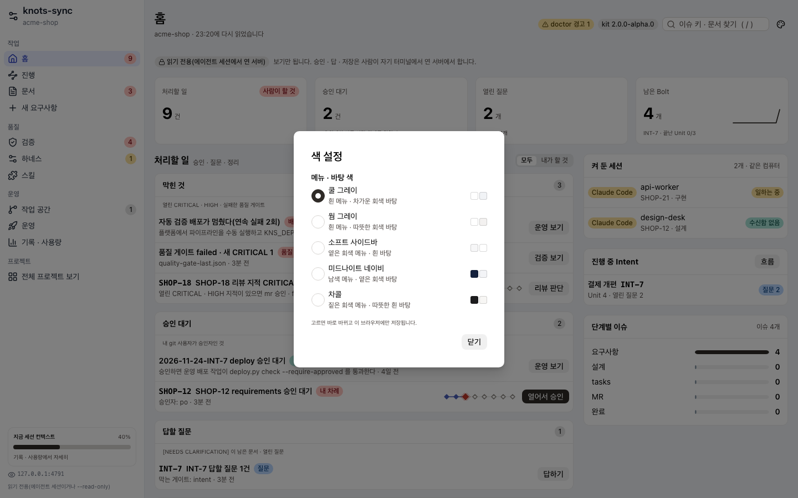
localStorage 의 kns-palette).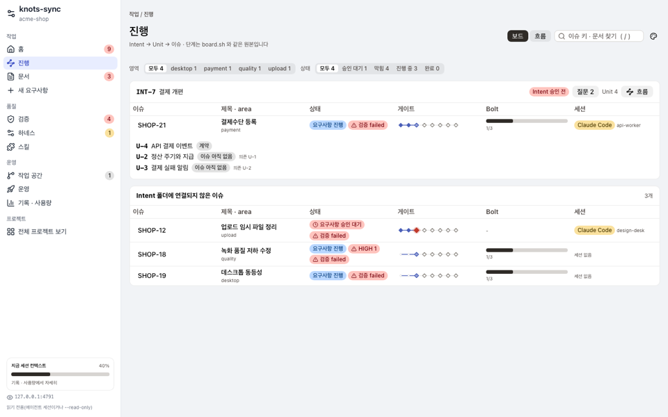
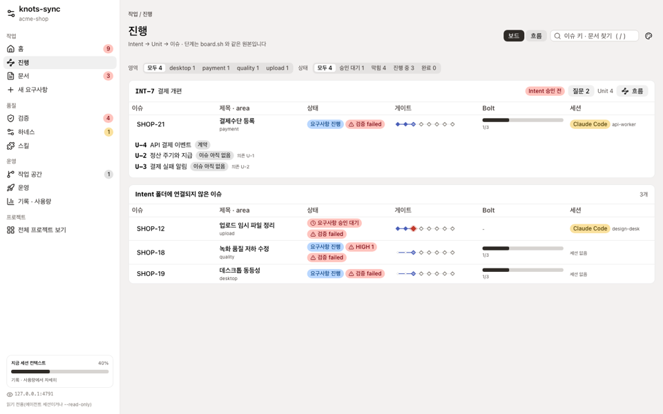
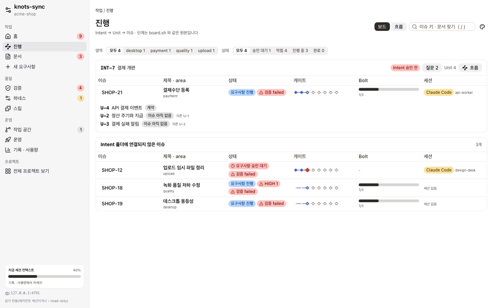
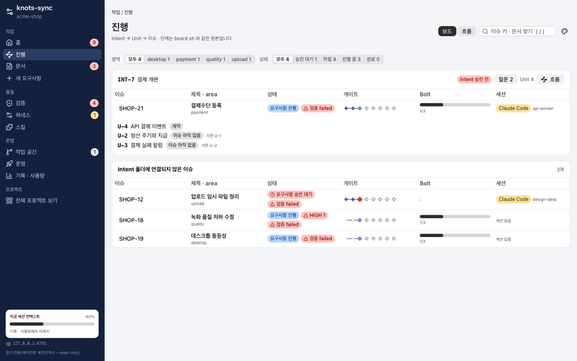
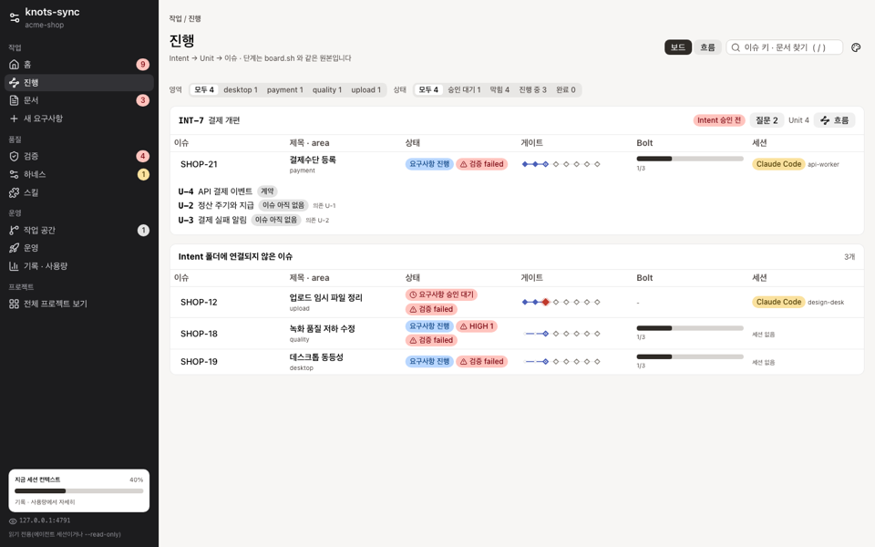
메뉴와 본문 바탕만 바뀌고 카드는 흰색 그대로다. 상태는 색만으로 말하지 않는다 — 칩에는 글자가, 실패 · 경고 · 승인 대기에는 아이콘이, 게이트 레일에는 모양이 함께 간다. 다크 모드는 없다.
좁은 화면
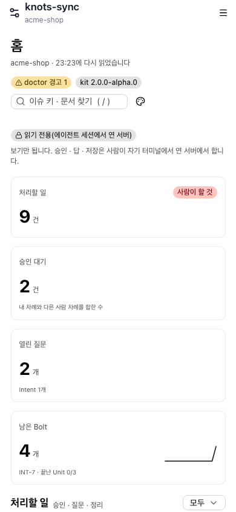
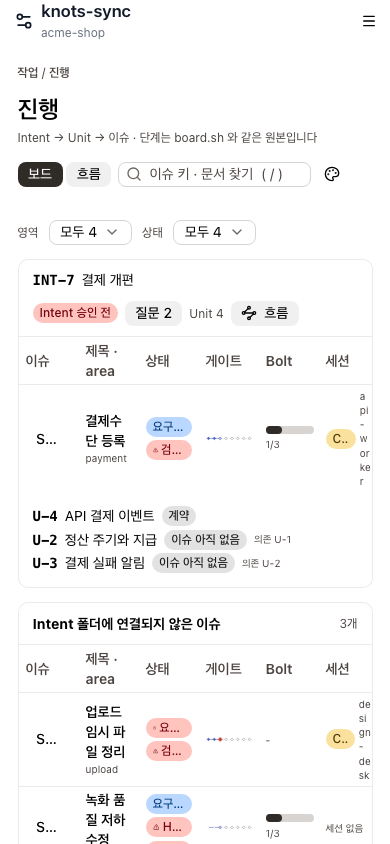
메뉴는 오른쪽 위 단추로 여는 서랍이 되고, 거름 단추는 드롭다운이 되며, 두 칸 배치는 한 칸으로 쌓인다. 표는 표 안에서 가로로 스크롤한다.
사람이 승인하는 순서(사람 터미널 서버)
스크린숏의 서버는 읽기 전용이라 이 순서를 찍지 못했다. 설계(06 §3.7)와 화면 코드 그대로 적는다.
자기 터미널에서 서버를 연다
knots-sync dashboard --open. 표준 오류에 나온 승인 PIN(10자)을 본다. PIN 은 파일 · 로그에 남지 않는다.승인할 문서를 연다
홈의 "승인 대기" 줄의 "열어서 승인", 또는 진행 → 이슈 → 해당 탭. 문서를 끝까지 읽는다. 고칠 것이 있으면 "편집"으로 고치고 저장한다(저장은 승인이 아니다).
승인 문구를 쓰고 "승인하고 기록"
문구는 기록으로만 남는다("R2.3 보관 기간 3일로 반영. 승인합니다" 같은). 돌려보내려면 "수정 요청"을 누르고, 반복될 일이면 "수정 요청을 규칙 후보로 남깁니다"를 켠다.
PIN 을 넣는다
대화상자에 PIN 을 넣고 Enter. 서버가 승인자 그룹 ·
[NEEDS CLARIFICATION]· 문서 sha · 앞 게이트를 검사하고approvals.md에 덧붙인 뒤 문서status를approved로 바꾼다. 거부되면 이유가 보인다: 403(승인자 아님 · PIN) · 409(다른 사람이 문서를 바꿈 · 이미 같은 sha 로 승인) · 422(표지 남음 · 앞 조건 미충족).세션에 알린다(선택)
응답에 그 이슈의 살아 있는 세션이 보이면 "세션에 요청" 시트(S05)에서 세션 · 요청 종류(문서를 고쳤습니다 · 답이 모였습니다 · 승인했습니다 · 수정을 요청합니다 · 리뷰 지적을 처리합니다 · 직접 씁니다)를 골라 보낸다. 고르지 않으면 아무것도 가지 않는다.
커밋한다
관리 페이지는 커밋하지 않는다. 승인 기록 · 문서 변경은 그 이슈 브랜치(또는 메인 폴더)에 그대로 있으니 사람이나 세션이 커밋한다.
내보내기
knots-sync dashboard --export <폴더> 는 스크립트 · 단추가 없는 정적 HTML 을 만든다. 스킬 · 세션 · 대기함 · 토큰 · 홈 절대경로가 0건이어야 하고, 하나라도 섞이면 출력 폴더를 지우고 exit 1 로 멈춘다. 체크포인트는 id 만 넣고 설명 본문은 넣지 않는다.